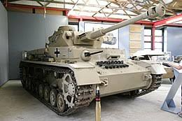

Veicoli Seconda Guerra Mondiale
Durante la seconda guerra mondiale un ruolo molto importante è stato ricoperto dai veicoli. Diversi generui di veicoli sono stati utilizzati,
dalle grandi macchine da guerra come i rivuzionali carroarmati, solo per citarne uno il famoso PANZER,fino alle automobili usata per trasportare milizie e viveri.
Nelle pagine di seguito vi parleremo di due tra i veicoli più utilizzati durante la guerra.
La scelta dei veicoli di cui parlarvi è stata tutt'altro che semplice,poiché sono stati utilizzati diversi veicoli interessanti,tuttavia alla fine abbiamo pensato che i più rappresentativi potessero essere il Panzer e la Jeep.

Per maggiori informzaioni riguardo la seconda guerra mondiale premere qui.